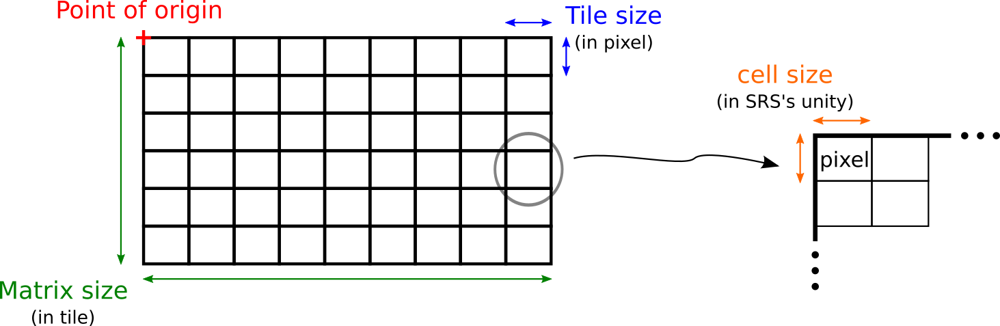
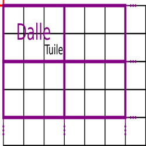
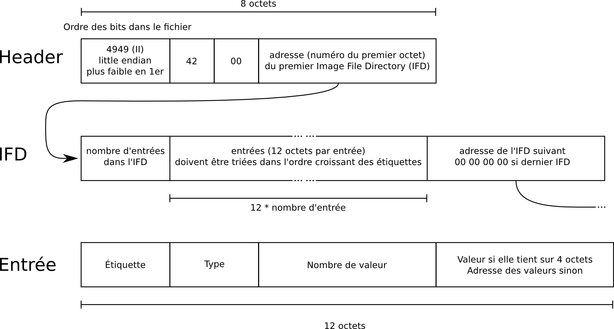
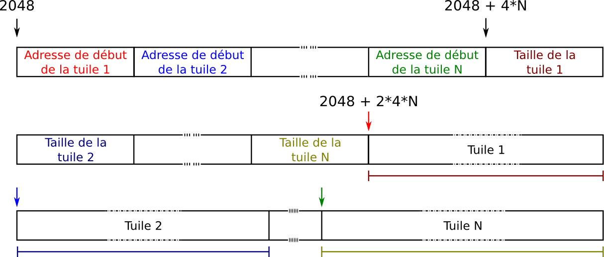
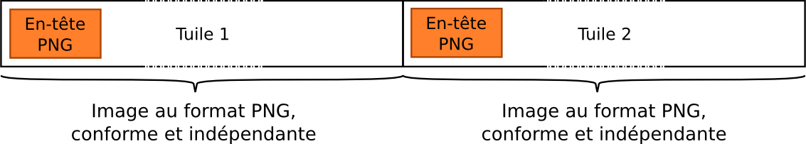
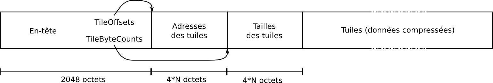

Spécification d'une pyramide ROK4
Glossaire
| Vocabulaire | Définition |
|---|---|
| Fichier | Élément de stockage de la donnée dans un système de fichier. Un fichier est indentifié par son chemin complet dans une arborescence |
| Objet | Élément de stockage de la donnée dans un système de stockage objet : CEPH, S3 ou SWIFT. Un objet est identifié par son nom et le nom du conteneur (pool CEPH, bucket S3 ou container SWIFT) dans lequel il est stocké |
| SRS | Système à Référence Spatiale, système de coordonnées |
| TM | Tile Matrix, définition d'un quadrillage : une origine + une résolution + deux dimensions en pixels |
| TMS | Tile Matrix Set, ensembles de Tile Matrix, dans un même système de coordonnées |
| Pyramide | Donnée raster ou vecteur prédécoupée et précalculée, dans une projection, à différentes résolutions (niveaux), utilisée par une couche ROK4SERVER |
| Niveau | Partie d’une pyramide, contenant des dalles homogènes en résolution (l'identifiant et la résolution du niveau sont définis dans le Tile Matrix Set) |
| Tuile | Unité de donnée élementaire manipulé par ROK4SERVER, appartenant à un niveau de pyramide dont les dimensions pixels sont définis dans le Tile Matrix (la tuile est la donnée demandée lors d'un GetTile en WMTS ou en Tile Map Service) |
| Dalle | Un fichier ou objet constituant une pyramide de donnée, contenant une ou plusieurs tuiles contiguës d'un niveau |
| Résolution | Dimensions de l'emprise au sol (dans l'unité du SRS) d'un pixel |
| WMS | Web Map Service : référence OGC |
| WMTS | Web Map Tiling Standard : référence OGC |
| TMS | Tile Map Service : référence OSGEO |
Le Tile Matrix Set
Un TMS est un ensemble de Tile Matrix, définissant le quadrillage d'autant de niveaux dans un fichier JSON. Le SRS du TMS est indiqué avec la même convention que pour les utilitaires basés sur la librairie PROJ, c’est-à-dire avec une chaîne de caractères formée du registre dans lequel est défini le SRS et de l’identifiant du SRS dans ce registre, par exemple : IGNF:LAMB93 ou EPSG:4326. EPSG peut être indiqué en minuscules ou en majuscule. Toutes les informations sont définies en fonction du SRS (unité du SRS pour les coordonnées et les résolutions). Un TM possède un identifiant (chaîne de caractères) unique dans le TMS. Les résolutions d'un niveau à l'autre ne vont pas nécessairement de deux en deux (bien que ce soit le cas le plus courant).
{
"crs" : "EPSG:2154",
"id" : "LAMB93",
"orderedAxes" : [
"X",
"Y"
],
"tileMatrices" : [
{
"matrixWidth" : 2,
"scaleDenominator" : 373497230.535336,
"tileWidth" : 256,
"tileHeight" : 256,
"pointOfOrigin" : [
0,
12000000
],
"matrixHeight" : 2,
"cellSize" : 104579.224549894,
"id" : "0"
}
]
}

Ce découpage de l'espace en tuile permet de se localiser grâce à des indices (principe du WMTS et du Tile Map Service). Ainsi, une tuile peut être identifiée avec :
- son niveau
- son indice de colonne (0 pour la première en partant de la gauche)
- son indice de ligne (0 pour la première en partant du haut)
On peut passer des coordonnées aux indices facilement. Cette conversion est utilisée pour identifier les tuiles nécessaires à la construction d'une image à partir de son emprise.
La pyramide
Une pyramide est constituée d’un ensemble de niveaux. Chaque niveau de la pyramide correspond à un Tile Matrix, une résolution.
Une pyramide peut être de trois types :
- Les pyramides raster : pyramide contenant de la donnée image. Utilisée par ROK4SERVER, elle peut être diffusée en WMS, WMTS et TMS. ROK4SERVER sait interpréter la donnée contenue dans cette pyramide et peut la réechantillonner, la reprojeter, y appliquer un style.
- Les pyramides vecteur : pyramide contenant de la donnée vecteur. Utilisée par ROK4SERVER, elle ne peut être diffusée qu'en TMS. ROK4SERVER ne sait pas interpréter la donnée contenue dans les tuiles et ne peut alors que les retourner telles qu'elles sont stockées.
Schéma JSON d'un descripteur de pyramide
Quand la pyramide contient des tuiles, elles sont regroupées par contiguïté en dalles, stockées en tant que fichier ou objet (Ceph, S3 ou Swift).

Caractéristiques des données
Les caractéristiques globales d'une pyramide raster sont :
- le nombre de canaux par pixel
- le nombre de bits par canal
- la photométrie (rgb, gray...)
- le format des canaux
- la compression des images (aucun, jpeg, lzw, packbit...)
Les caractéristiques globales d'une pyramide vecteur sont :
- le format de la donnée : Mapbox Vector Tile conditionné en PBF.
Ces caractéristiques sont valables pour l'ensemble de la pyramide.
Les tables
Pour une pyramide vecteur, on va préciser les tables et leurs attributs présentes dans les données, et ce par niveau. On aura également des informations sur les valeurs prises par les attributs.
Les masques
Il est possible de stocker les masques en parallèle de la donnée dans le cas d'une pyramide raster. Les masques sont des images aux même dimensions que les images de données et permettent de distinguer précisément les pixels de données de ceux de nodata. Les masques sont des images à 1 canal sur 8 bits, compressé en deflate (zip). La valeur 0 signifie que le pixel correspondant dans l'image de données est du nodata, les valeurs de 1 à 255 signifient qu'il s'agit de donnée.
Le descripteur de pyramide
Le descripteur de pyramide est un document JSON (extension .json), au nom de la pyramide et contenant toutes les informations nécessaires à ROK4SERVER pour exploiter la pyramide (présentées au dessus). Elles sont également utilisées lorsque l'on utilise les outils ROK4GENERATION pour manipuler une pyramide : on récupère ainsi les caractéristiques de la pyramide pour utiliser les mêmes.
Selon le type de la pyramide, les informations présentes dans le descripteur sont différentes
Informations globales
| Type de pyramide | Raster | Vecteur |
|---|---|---|
| Nom du TMS associé | Présent | Présent |
| Format (contient la compression et le format des données) |
TIFF_RAW_UINT8 TIFF_RAW_FLOAT32 TIFF_LZW_UINT8 TIFF_LZW_FLOAT32 TIFF_ZIP_UINT8 TIFF_ZIP_FLOAT32 TIFF_PKB_UINT8 TIFF_PKB_FLOAT32 TIFF_PNG_UINT8 TIFF_JPG_UINT8 |
TIFF_PBF_MVT |
| Le nombre de canaux des données | Présent | Absent |
| La valeur du nodata | Présent | Absent |
| L'interpolation utilisée à la génération | Présent | Absent |
| La photométrie des données | Présent | Absent |
Extrait d'un descripteur de pyramide raster, pour du MNT :
{
"format": "TIFF_LZW_FLOAT32",
"mask_format": "TIFF_ZIP_UINT8",
"tile_matrix_set": "RGM04UTM38S_10cm",
"raster_specifications": {
"channels": 1,
"nodata": "-99999",
"photometric": "gray",
"interpolation": "nn"
}
}
On notera que le SRS n'est pas renseigné, il l'est indirectement via le TMS.
Informations par niveau
Les niveaux sont renseignés dans l'ordre, du plus haut (moins résolu) au plus bas (meilleure résolution). Les informations suivantes sont présentes pour les 3 types de pyramides :
- L'identifiant du Tile Matrix : code unique du niveau, identique à celui dans le TMS.
- Le nombre de tuiles, dans la hauteur et dans la largeur, dans une dalle.
- Les indices des tuiles extrêmes pour ce niveau : au-delà, on sait d'avance qu'il n'y aura pas de données
Pyramide raster
- Les informations sur le stockage des données et éventuellement des masques :
- En mode "fichier" : les dossiers "racine" pour ce niveau, en relatif par rapport à l'emplacement du descripteur et la profondeur de l'arborescence (nombre de sous dossier) à partir de la racine du niveau.
- En mode "objet" : les préfixes utilisés pour le nommage des dalles, le conteneur objet et dans le cas Swift, le type d'authentification. Les informations générale sur le cluster (URL, user...) sont stockées dans des variables d'environnement ou dans la configuration de ROK4SERVER.
Exemple de niveau d'une pyramide raster avec masques stocké dans un pool Ceph :
{
"levels": [
{
"tile_limits": {
"min_row": 0,
"min_col": 0,
"max_col": 0,
"max_row": 0
},
"storage": {
"mask_prefix": "IGN/SCAN1000/MASK_0",
"type": "CEPH",
"image_prefix": "IGN/SCAN1000/DATA_0"
},
"tiles_per_height": 16,
"id": "0",
"tiles_per_width": 16
},
{
"tiles_per_width": 16,
"id": "1",
"storage": {
"mask_prefix": "IGN/SCAN1000/MASK_1",
"type": "CEPH",
"image_prefix": "IGN/SCAN1000/DATA_1"
},
"tiles_per_height": 16,
"tile_limits": {
"min_col": 0,
"min_row": 0,
"max_row": 0,
"max_col": 0
}
}
]
}
Pyramide vecteur
- Les informations sur le stockage des données :
- En mode "fichier" : les dossiers "racine" pour ce niveau, en relatif par rapport à l'emplacement du descripteur et la profondeur de l'arborescence (nombre de sous dossier) à partir de la racine du niveau.
- En mode "objet" : les préfixes utilisés pour le nommage des dalles, le conteneur objet et dans le cas Swift, le type d'authentification. Les informations générale sur le cluster (URL, user...) sont stockées dans des variables d'environnement ou dans la configuration de ROK4SERVER.
- Les informations sur les tables et leurs attributs dans les données de ce niveau : on va potentiellement détailler les valeurs distinctes prises si il y en a moins de 50, et donner le minimum et le maximum pour les attributs numériques.
Exemple de niveau d'une pyramide vecteur stocké dans un dossier :
{
"levels": [
{
"tiles_per_height": 8,
"tables": [
{
"attributes": [
{
"count": 101,
"name": "insee_dep",
"type": "character varying(3)"
},
{
"type": "character varying(5)",
"count": 34968,
"name": "insee_com"
},
{
"type": "character varying(24)",
"name": "id",
"count": 34968
},
{
"type": "character varying(50)",
"count": 32485,
"name": "nom_com_m"
},
{
"name": "population",
"count": 5817,
"type": "numeric(11,0)"
},
{
"min": 1,
"name": "ogc_fid",
"count": 34968,
"max": 34968,
"type": "integer"
},
{
"type": "character varying(2)",
"count": 61,
"name": "insee_can"
},
{
"values": [
"75",
"06",
"24",
"03",
"01",
"28",
"52",
"93",
"04",
"94",
"02",
"44",
"53",
"27",
"32",
"11",
"76",
"84"
],
"type": "character varying(2)",
"count": 18,
"name": "insee_reg"
},
{
"name": "statut",
"count": 5,
"values": [
"Préfecture",
"Sous-préfecture",
"Capitale d'état",
"Préfecture de région",
"Commune simple"
],
"type": "character varying(24)"
},
{
"count": 10,
"name": "insee_arr",
"values": [
"NC",
"1",
"4",
"9",
"8",
"6",
"3",
"2",
"7",
"5"
],
"type": "character varying(2)"
},
{
"name": "nom_com",
"count": 32704,
"type": "character varying(50)"
},
{
"name": "code_epci",
"count": 1256,
"type": "character varying(21)"
},
{
"type": "character varying(3)",
"values": [
"COM"
],
"count": 1,
"name": "type"
}
],
"geometry": "MULTIPOLYGON",
"name": "commune"
}
],
"storage": {
"image_directory": "COMMUNES/DATA/18",
"path_depth": 2,
"type": "FILE"
},
"tile_limits": {
"min_col": 132753,
"max_row": 91738,
"max_col": 136273,
"min_row": 90179
},
"id": "18",
"tiles_per_width": 8
}
]
}
L'architecture de stockage
Le serveur ROK4 accède toujours aux données par tuile (via ses indices) : * en WMTS et TMS, dans la grille native, on ne demande qu'une tuile * en WMTS, dans une grille additionnelle, on liste les tuiles sources nécessaires à la constitution de la tuile à retourner * en WMS, à partir de la zone demandée, on liste les tuiles sources nécessaires à la constitution de l'image à retourner
ROK4GENERATION et ROK4SERVER se mettent donc d'accord sur la façon d'agencer les données :
- Le découpage en tuile est défini par le TMS (comme vu plus haut)
- Le regroupement en dalle est défini dans le descripteur de pyramide : des indices de la tuile, par division euclidienne, on obtient les indices de la dalle, en partant du coin supérieur gauche définit dans le TMS.
- Reste l'emplacement de stockage de la dalle, que nous allons décrire maintenant
- Et quelle partie de la dalle correspond à notre tuile, ce que nous verrons après dans la partie "La structure d'une dalle"
On note les indices avec la colonne en premier : (colonne, ligne)
En mode fichier
Toutes les dalles, que ce soit les données ou les masques, sont dans un dossier portant le même nom que le descripteur. Le nom de la pyramide ne peut pas contenir de / dans le cas d'un stockage objet. Elles sont cependant séparées dans des sous arborescences parallèles :
- /pyramid/directory/
/... - /pyramid/directory/
/...
Repartons des indices de la tuile voulue (414, 3134) avec des dalles de 16 tuiles par 16 tuiles : on veut donc accéder à la dalle (25,195). Ces indices sont ensuite convertis en base 36 (avec les chiffres dans cet ordre : 0123456789ABCDEFGHIJKLMNOPQRSTUVWXYZ) : (24,195) donne ('P', '5F')
On peut être amené à ajouter des 0 pour forcer la longueur de l'écriture en base 36, pour s'adapter à la profondeur d'arborescence voulue ou avoir la même longueur pour les 2 indices. Avec une profondeur d'arborescence de 2, les indices vont être découpés en 3 parties (les deux niveaux de dossier + le nom du fichier). On a donc besoin d'avoir des indices en base 36 sur au moins 3 chiffre : ('00P', '05F'). On obtient le chemin suivant, en relatif à partir de la racine du niveau (que ce soit la donnée ou le masque) : 00/05/PF.tif. Soit un chemin complet :
- pour la dalle de donnée :
/pyramid/directory/<Pyramid's name>/DATA/<level>/00/05/PF.tif - pour la dalle de masque :
/pyramid/directory/<Pyramid's name>/MASK/<level>/00/05/PF.tif
Dans un cas où l'écriture en base 36 nécessite plus de chiffres qu'il n'y a de parties dans le chemin, c'est le premier dossier qui contiendra plus de chiffres : ('C4C3C2C1C0','L4L3L2L1L0') donnera C4L4C3L3C2L2/C1L1/C0L0.tif.
Avec cette manière de ranger les données, un dossier de l'arborescence contiendra des dalles contiguës.
En mode objet
En mode objet, le nommage est beaucoup plus simple car on utilise directement les indices de dalle en base 10. De plus,l e nom de la pyramide peut contenir des /. Si on reprend la dalle précédente (24,195), on aura les objets suivants :
- pour la dalle de donnée :
<Pyramid's name>/DATA_<level>_24_195 - pour la dalle de masque :
<Pyramid's name>/MASK_<level>_24_195
La structure d'une dalle
Les dalles sont utilise le conteneur TIFF (Tagged Image File Format). Ce dernier offre de nombreuse possibilité de stockage des données. Le concept principal est de renseigner les différentes informations via des « tags », des champs (liste des tags).
Dans le cas d'une dalle vecteur, TIFF sert uniquement de conteneur et aucune information propre aux données raster n'est donnée. On a alors une dalle uniquement utilisable par les outils ROK4. Seule la possibilité de tuilage des données qu'offre le TIFF est utilisée.
Dans le cas d'une dalle raster, on peut préciser les nombres de canaux, leur format et taille, la photométrie, la structure des données, toute sorte de métadonnées, rendant possible l'interprétation de l'image par les programmes.
Ce document n'a par pour but de reprendre les spécifications du format TIFF, mais de voir globalement les possibilités et préciser celles exploitées.
L'en-tête
On retrouve dans cette partie toutes les informations sur le fichier que les logiciels vont utiliser pour afficher la dalle dans le cas du raster.

Par exemple, l'étiquette imageWidth (256), de type Long (4), une seule valeur sur 32 bits, elle tient donc sans passer par une adresse : 4096. Ce qui donne en héxadécimal, little endian : 00 01 04 00 01 00 00 00 00 10 00 00
Cependant, ROK4SERVER a déjà connaissance de ces métadonnées car stockées dans le descripteur de pyramide et le TMS. On peut donc gagner du temps en ignorant cet en-tête. C'est pourquoi celle-ci fait toujours 2048 octets, dont la majorité n'est pas exploitée.
On va enfin trouver dans cet en-tête les informations sur le tuilage, ou plutôt sur l'endroit où ces informations sont stockées (adresses et tailles).
Les données
Le tuilage
Le format TIFF permet de stocker les données par bloc, ceci dans le but d’accéder efficacement à toutes les parties de la dalle. On peut ainsi accéder à chaque tuile contenue dans la dalle directement, sans lire depuis le début. On conserve bien dans la structure de la dalle le découpage en tuile. Chaque tuile est indépendante des autres, formant un fichier à part entière, moins l'en-tête. Elles sont enregistrées de gauche à droite puis de haut en bas.
Pour ce faire, on renseigne l'adresse de début (TileOffsets) sur 4 octets et la taille en octet (TileByteCounts) sur 4 octets de chaque tuile. Ces valeurs sont stockées à partir de 2048 octets, ce sont les premières valeurs lues par ROK4SERVER.

L'en-tête contient les étiquettes :
- TileOffsets : tag 324, type Long, on aura N valeurs, et celles-ci ne tenant pas toutes sur 4 octets, on donne l'adresse à laquelle ces valeurs commencent (ici 2048)
- TileByteCounts : tag 325, type Long, on aura N valeurs, et celles-ci ne tenant pas toutes sur 4 octets, on donne l'adresse à laquelle ces valeurs commencent (ici 2048 + 4*N)
De cette manière, que ce soit ROK4 en étêtant de 2048 octets, ou les autres programmes, le tuilage est compris.
La compression (cas raster)
Le format TIFF permet officiellement de nombreuses compressions pour des données raster. Cette compression est effectuée sur chaque tuile. ROK4SERVER, pour des données raster, va comprendre l'absence de compression et les compressions :
- sans pertes : LZW, PNG, PackBits, Deflate
- avec pertes : JPEG
Le PNG a une particularité : la compression correspond à du Deflate, mais on veut que ROK4SERVER puisse retourner facilement des tuiles de PNG, avec l'en-tête. Dans ce cas, les dalles ne sont pas lisible par d'autres applications que ROK4. Les tuiles stockées contiennent chacune leur en-tête afin de pouvoir être renvoyées directement.

Cas vecteur
Le stockage de données vecteur dans des dalles TIFF est un fonctionnement propre au projet ROK4. Cette façon de faire permet d'exploiter tout le fonctionnement mis en place pour le raster afin de diffuser des tuiles vecteur. ROK4SERVER ne sait pas interpréter les tuiles, et se contente de les lires dans les dalles et de les renvoyer lorsqu'elles sont requêtées en TMS.
Concrètement, ce sont les tuiles au format Mapbox Vector Tile empaquetées en PBF, générées par l'outil Tippecanoe, qui sont regroupées et encapsulées dans une dalle TIFF. Ce fonctionnement rejoint celui du PNG pour les données raster.
Récapitulatif
Voici la structure globale d'une dalle de la pyramide ROK4, dalle contenant N tuiles.

Les références
Lors de la création d'une pyramide de mise à jour, on ne va potentiellement pas recopier toutes les données de la version précédente, mais simplement les référencer à l'aide de liens symbolique en stockage fichier ou d'objets symboliques (objet contenant simplement le nom du contenant et de l'objet cible précédé de la signature SYMLINK# : SYMLINK#<contenant>/<nom de l'objet>) en stockage objet. Cela est mis en place par les outils de prégénération mais est transparent pour le serveur qui se contente de lire UNE pyramide.
Le fichier liste
Le fichier liste est un fichier texte (extension .list) au nom de la pyramide et situé à côté du descripteur de pyramide. Il contient la liste de toutes les dalles de données et masques que contient la pyramide. Si certaines dalles ne sont que des références dans la pyramide (liens/objets symboliques), c'est le nom du fichier/objet cible qui est listé (appartenant à la structure d'une autre pyramide).
Ce fichier est uniquement utilisé par les outils de prégénération, pour connaître sans avoir à parcourir la pyramide son contenu exact (indispensable lors d'une mise à jour). Dans le cas du stockage objet, où aucun parcours n'est possible, ce fichier est particulièrement précieux.
Le fichier liste est en deux parties, séparées par un dièse :
- L'en-tête permet de lister et d'indexer les pyramides référencées, c'est-à-dire contenant au moins une des dalles listées. L'index 0 sera pour la pyramide elle même. Ces index sont utilisés dans la liste des dalles pour "factoriser" les racines des pyramides (conteneur + nom dans le cas objet, dossier racine des données de la pyramide dans le cas fichier).
- La liste des dalles (données et masques)
Exemple de liste pour un stockage fichier
0=/home/ign/PYRAMIDS/PYRAMID_V2
1=/home/ign/PYRAMIDS/PYRAMID_V1
\#
1/DATA/19/04/RR/R2.tif
1/DATA/19/04/RR/R3.tif
1/DATA/19/04/RR/S1.tif
1/DATA/19/04/RR/T1.tif
1/DATA/19/04/RR/U0.tif
1/DATA/19/04/RR/U1.tif
1/DATA/19/04/RR/S2.tif
1/DATA/19/04/RR/T2.tif
1/DATA/19/04/RR/S3.tif
1/DATA/19/04/RR/T3.tif
1/DATA/19/04/RR/U2.tif
1/DATA/18/02/DD/VJ.tif
1/DATA/17/01/66/XR.tif
1/DATA/16/00/3L/GD.tif
1/DATA/18/02/DD/WI.tif
1/DATA/18/02/DD/XI.tif
0/DATA/19/04/VZ/JV.tif
0/DATA/19/04/VZ/FY.tif
0/DATA/19/04/VZ/FZ.tif
0/DATA/19/04/VZ/GX.tif
0/DATA/19/04/VZ/HX.tif
0/DATA/19/04/VZ/IW.tif
0/DATA/19/04/VZ/JW.tif
0/DATA/19/04/VZ/IX.tif
0/DATA/19/04/VZ/JX.tif
0/DATA/19/04/VZ/GY.tif
0/DATA/19/04/VZ/HY.tif
0/DATA/19/04/VZ/GZ.tif
0/DATA/19/04/VZ/HZ.tif
0/DATA/19/04/VZ/IY.tif
0/DATA/19/04/VZ/JY.tif
0/DATA/19/04/VZ/IZ.tif
0/DATA/19/04/VZ/JZ.tif
Exemple de liste pour un stockage objet
0=PYRAMIDS/PYRAMID_V2
1=PYRAMIDS/PYRAMID_V1
\#
0/DATA_11_65_42
0/MASK_11_65_42
0/DATA_11_65_43
0/MASK_11_65_43
0/DATA_11_66_42
0/MASK_11_66_42
0/DATA_11_67_42
0/MASK_11_67_42
0/DATA_11_66_43
0/MASK_11_66_43
0/DATA_11_67_43
0/MASK_11_67_43
0/DATA_11_65_44
0/MASK_11_65_44
1/DATA_11_61_42
1/MASK_11_61_42
1/DATA_11_61_43
1/MASK_11_61_43
1/DATA_11_62_42
1/MASK_11_62_42
1/DATA_11_63_42
1/MASK_11_63_42
1/DATA_11_62_43
1/MASK_11_62_43